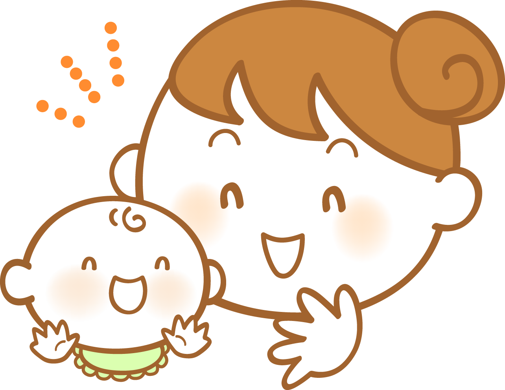
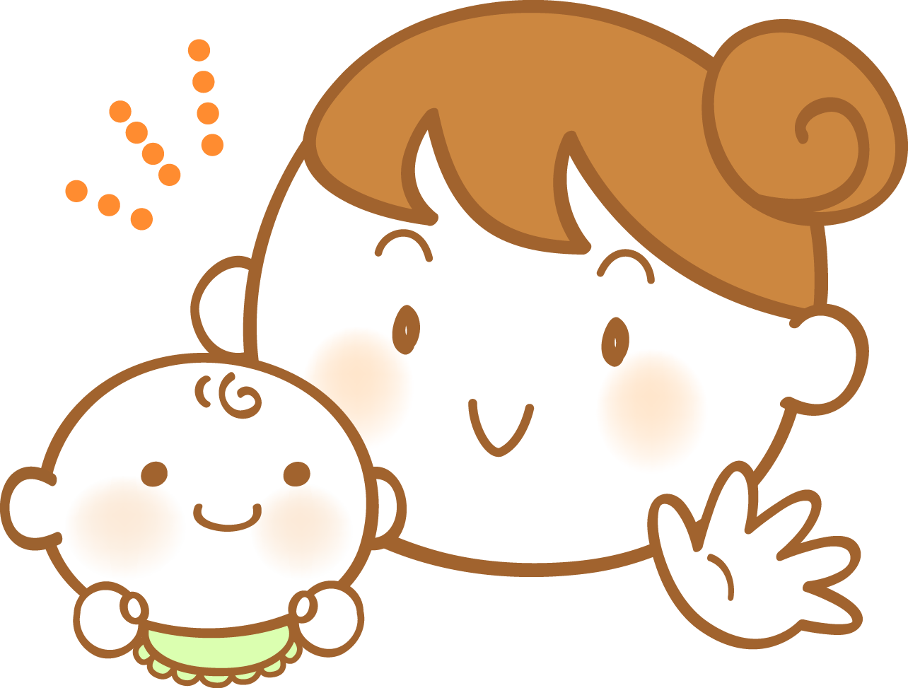
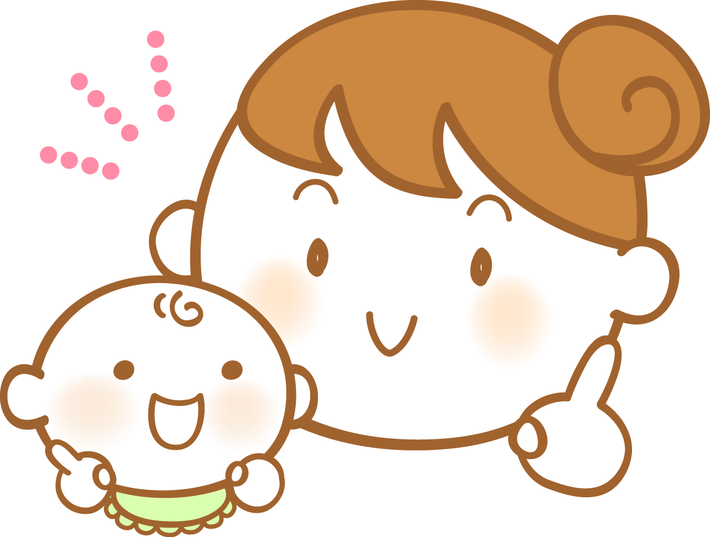

ご利用者の声（パターン１）

５か月男の子ママ
低月齢の子が楽しく過ごせる貴重な遊び場です。 子育ての悩みも聞いてもらえる母も子も過ごしやすい空間です♪

８か月男の子ママ
子供は好きだけど、ずーと一緒は辛い…そんな時に出逢ったころもぐ広場は、頑張るママと赤ちゃんの味方です！ 出産〜産後トーク、おすすめ絵本＆遊びや離乳食講座、家の愚痴や美味しいご近所情報（笑）etc…楽しい脱ママ時間を過ごせますよ

６か月女の子ママ
産後家に篭りがちだった2ヶ月半の時にころもぐデビューしました。 月齢が近いママはもちろん、先輩ママとも何でも話せて、自分だけじゃないんだと心が軽くなりリフレッシュできます。 毎回帰りたくないーと思うくらい、みんなに寄り添ってくれる温かい場所です！
１歳４か月ママ
一番大好きな赤ちゃん広場です。 離乳食や育児などの子ども関連の相談ができるのはもちろん、親がハマっていることなど共通の趣味を持つ友達に会えたりして、素敵な出会いを提供していただいています。 これからも末長くお世話になりたいと思います！
ご利用者の声（パターン２）
５か月男の子ママ
低月齢の子が楽しく過ごせる貴重な遊び場です。 子育ての悩みも聞いてもらえる母も子も過ごしやすい空間です♪
８か月男の子ママ
子供は好きだけど、ずーと一緒は辛い…そんな時に出逢ったころもぐ広場は、頑張るママと赤ちゃんの味方です！ 出産〜産後トーク、おすすめ絵本＆遊びや離乳食講座、家の愚痴や美味しいご近所情報（笑）etc…楽しい脱ママ時間を過ごせますよ
６か月女の子ママ
産後家に篭りがちだった2ヶ月半の時にころもぐデビューしました。 月齢が近いママはもちろん、先輩ママとも何でも話せて、自分だけじゃないんだと心が軽くなりリフレッシュできます。 毎回帰りたくないーと思うくらい、みんなに寄り添ってくれる温かい場所です！
１歳４か月ママ
一番大好きな赤ちゃん広場です。 離乳食や育児などの子ども関連の相談ができるのはもちろん、親がハマっていることなど共通の趣味を持つ友達に会えたりして、素敵な出会いを提供していただいています。 これからも末長くお世話になりたいと思います！